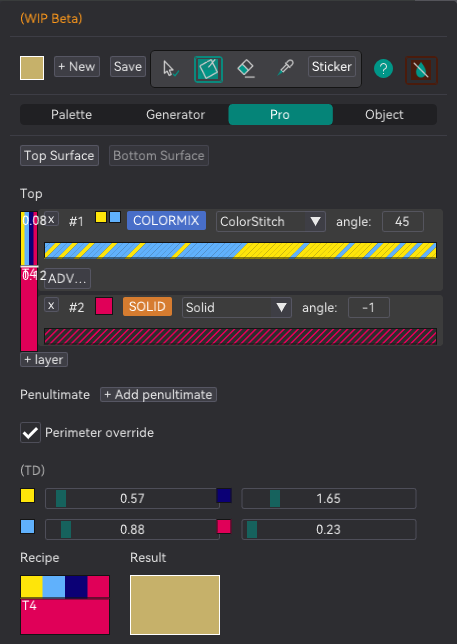

§1e · §1g — Colour
TD & the Studio
Four numbers decide whether everything else on this site works. They describe how much light gets through each of your filaments, and they are the reason a stack of thin passes comes out as one colour instead of as stripes.
- no gate
- per machine, not per profile
Where Sandwich editor›Filament & TD andColorStitch Studio
Filament is a filter
Put a sheet of coloured plastic over something and two things happen at once: some light bounces off the plastic, and some goes through it, hits what is underneath, and comes back up through the plastic again. What your eye gets is a mixture, and how much of each depends on how thick the plastic is.
That is a well-understood piece of physics with a well-understood equation. The fork uses
the ordinary decadic Beer–Lambert law, the same one used in
spectrophotometry, and defines TD as the thickness at which one decade of
light is absorbed. So a slab of thickness d lets through:
acck = ck·(1 − tk) + acck−1·tk each pass over the one below, bottom to top
Two details in there matter and are easy to get wrong. The composite runs in linear RGB, because absorption is a linear operation on light and sRGB is a curve applied to it; converting once at each end and never in between is what keeps the middle of a gradient from going muddy. And the order of the passes is not interchangeable: the operator is associative but not commutative, so a translucent red over an opaque blue is genuinely a different colour from an opaque blue over a translucent red.
TD explorer
One filament, one base underneath, one thickness. Pull the TD slider around and watch what changes. Low TD stops mattering almost immediately; high TD keeps changing the colour long after a low-TD filament has gone completely opaque, and that region is where PathBlend and the multi-pass glazes live.
ColorSci::blend_stacked, and the same
TD_mm = neotko_td_N × layer_height conversion RealColor does at the source.
| TD | Type | What it means in practice |
|---|---|---|
0.1 – 0.5 | Highly opaque | One or two passes cover whatever is below completely. Good as a base, useless as a glaze. |
0.5 – 3.0 | Opaque to translucent | Some of the layer below shows through. Most ordinary PLA sits here. |
3.0 – 7.0 | Translucent | Several passes needed to block. This is glaze territory. |
7.0 – 10+ | Highly translucent | The lower colour is almost always visible. Use it as a tint, not as a colour. |
neotko_td_1..4 are stored as a multiple of one nominal layer height, because
every consumer except one divides an already-normalised ratio by them and the units
cancel. RealColor is the exception: it multiplies TD against a real millimetre thickness,
so it converts once at the source. Before that conversion existed every material read as
roughly five times more transmissive than intended at 0.2 mm.
Why TD is saved per machine
Because it describes the filament on your shelf, not the part you are slicing. Move to a different print profile and the spool has not changed. Buy a different brand of white and it has, even though nothing in the profile did.
Four sliders, one per loaded filament, saved against the machine. They also show up in the Painter's Object & TD department, which is the same four numbers in a second place rather than a second set.

transmit= number.Measuring it, honestly
There is no built-in measurement tool yet. What people do is print a wedge, compare it against the preview, and nudge the slider until the two agree. It is imprecise and it works well enough that the difference between "tuned by eye" and "left at defaults" is much larger than the difference between "tuned by eye" and "measured properly".
A real measurement procedure is an open piece of work, and the honest position today is that TD is a fitted parameter rather than a measured one. Everything downstream inherits that, RealColor included.
The ColorStitch Studio
Once you know the TD of four filaments, you know exactly which colours they can and cannot reach by stacking. The Studio at the bottom of the Sandwich Editor works that out for you: it generates a strip of swatches, each one a complete pass recipe with its predicted colour, and clicking one loads it straight into the editor.
blend_stacked, matched by minimising
CIEDE2000, which is the metric the Studio's own Target + Match uses.
| Studio mode | What it generates |
|---|---|
| Gradient ramp | A manual top-only ramp between two tools: A on the visible side, B as the contrast. You set Steps and the Split, thinnest to thickest top pass in mm, with a floor of 0.04. |
| Flat color (predict) | The gamut you can reach by stacking solid passes. Robust and predictable, and the mode to start from. |
| Mixed approximation (predict) | A wider gamut: a dithered ColorStitch base with a translucent solid on top. Colours no single filament can make, at the cost of being harder to predict. |
Target + Match ▸ runs the search backwards. Pick a colour, press Match, and the Studio hunts for the recipe whose predicted colour is closest to it, minimising ΔE2000, then loads that recipe and tells you the ΔE it settled for. A ΔE under about 2 is a difference most people will not notice side by side. Above 5 you are looking at two different colours and the honest answer is that your filaments cannot get there.
Name + Export turns swatches into saved Surface Effect Profiles, which is the bridge from here to the Painter. The strips react live to the TD sliders, so changing a TD value re-plans every recipe in the strip.
The catch
- Wrong TD, wrong everything. The Studio, the painter's Result swatch, RealColor and every demo on this site read the same four numbers. Get them wrong and they are all wrong together, consistently and convincingly.
- TD is one number, not three. The engine's material struct holds a TD per channel and the shader already indexes it that way, but the interface broadcasts a single scalar to all three. So this is a grey absorber, not a coloured filter. A red filament that absorbs green harder than it absorbs blue is not modelled.
- The gamut is smaller than it looks. Two opaque filaments stack to roughly two colours. Most of the interesting range comes from having something translucent in the set, and no amount of searching invents range that is not there.
- Predicted is not printed. Surface finish, the light you look at it under, and the printer's own behaviour all move the result. The panel says as much itself.